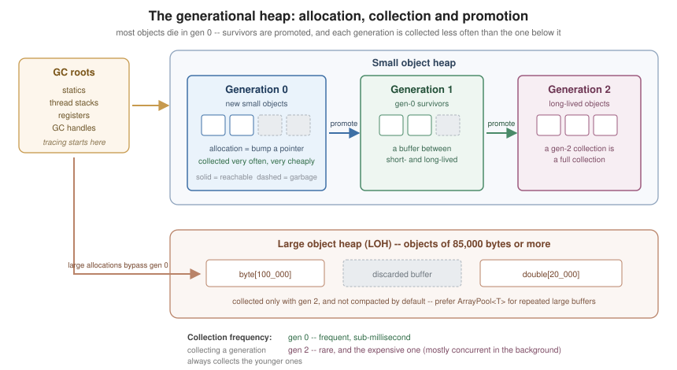

Memory Management and Disposal
|
This content was generated with the assistance of AI and should be verified against the official documentation before being relied on in production. |
C# code runs on a managed runtime: reference-type objects are allocated on a garbage-collected heap and are
freed automatically once nothing can reach them. That removes a whole category of bug — no free, no dangling
pointer, no double-free — but it does not remove the need to think about memory. Two things still need your
attention: how much you allocate, and the resources the garbage collector knows nothing about (file handles,
sockets, database connections), which are released deterministically through IDisposable.
The Generational Garbage Collector
The .NET GC is a tracing, generational, compacting collector. Tracing means it starts from a set of roots — static fields, locals on every thread’s stack, CPU registers, GC handles — and marks everything reachable from them; whatever is left unmarked is garbage. Generational means the heap is divided by object age, on the empirical observation that most objects die young:
-
Generation 0 holds newly allocated small objects. It is small (a few hundred KB to a few MB) and is collected very often and very cheaply.
-
Generation 1 holds gen-0 survivors. It acts as a buffer between short- and long-lived objects.
-
Generation 2 holds gen-1 survivors — effectively, long-lived objects. A gen-2 collection is a full collection and is the expensive one.
Collecting a generation always collects every younger one: a gen-1 collection also collects gen 0, and a gen-2 collection collects everything.

Allocation itself is fast. The gen-0 region is contiguous and the allocator simply bumps a pointer; the cost of a managed allocation is amortised into the collections that follow it, not paid up front.
The Large Object Heap
Objects of 85,000 bytes or more (typically big arrays) are not allocated in gen 0 at all. They go on the
large object heap (LOH), which is collected only as part of a gen-2 collection and, by default, is not
compacted — copying multi-megabyte objects would cost more than the fragmentation it avoids. The practical
consequences: large arrays are expensive, repeatedly allocating and discarding them fragments the LOH, and the
fix is usually pooling (see Pooling: ArrayPool<T> and MemoryPool<T>) rather than tuning the GC.
Compaction of the LOH can be requested explicitly for the next full collection, but this is a last resort:
using System.Runtime;
public static class LohMaintenance
{
public static void CompactOnce()
{
// Rare: only after a known one-off spike has left the LOH fragmented.
GCSettings.LargeObjectHeapCompactionMode = GCLargeObjectHeapCompactionMode.CompactOnce;
GC.Collect(2, GCCollectionMode.Forced, blocking: true, compacting: true);
}
}Workstation, Server and Concurrent Modes
The GC has two flavours, chosen by configuration rather than by code:
-
Workstation GC — the default for client applications. One heap, tuned for low latency on a single user’s machine.
-
Server GC — multiple heaps with dedicated GC threads, tuned for throughput. It is the default for ASP.NET Core applications and is the right choice for most server workloads, trading memory for far higher allocation throughput. Since .NET 9, DATAS (Dynamic Adaptation To Application Sizes) is enabled by default for Server GC, so the heap count starts small and adapts at run time rather than being fixed at one per logical core.
Independently, background (concurrent) GC lets most of a gen-2 collection run on a background thread while application threads keep running, so full collections cause a much shorter pause. It is enabled by default.
These are project properties, not API calls:
<Project Sdk="Microsoft.NET.Sdk">
<PropertyGroup>
<TargetFramework>net10.0</TargetFramework>
<ServerGarbageCollection>true</ServerGarbageCollection>
<ConcurrentGarbageCollection>true</ConcurrentGarbageCollection>
</PropertyGroup>
</Project>They can also be set at run time through environment variables (DOTNET_gcServer, DOTNET_gcConcurrent) or in
runtimeconfig.json, which is what container deployments usually do.
What Allocates, and What Does Not
Reducing garbage is far more effective than tuning the collector. It helps to know exactly which constructs put objects on the heap:
| Allocates on the heap | Does not allocate |
|---|---|
|
|
Boxing a value type (assigning to |
Generic code over |
Array creation, including |
|
String concatenation and most |
|
A lambda that captures a variable (a closure object), and a delegate over it |
A static lambda capturing nothing (the delegate is cached) |
An iterator method ( |
|
An |
An |
The most common accidental allocation is boxing:
public static class BoxingExamples
{
public static void Show()
{
int value = 42;
object boxed = value; // allocates: a heap copy of the int
int unboxed = (int)boxed; // copies back out
// A struct assigned to a non-generic interface is boxed too.
IComparable comparable = value; // allocates
// Generic code avoids the box entirely.
int larger = Max(value, 7); // no allocation
Console.WriteLine((unboxed, comparable, larger));
}
private static T Max<T>(T a, T b) where T : IComparable<T> =>
a.CompareTo(b) >= 0 ? a : b;
}string.Format-style APIs that take object parameters box every value-type argument; interpolated strings,
which use an interpolated string handler, generally do not.
Deterministic Cleanup: IDisposable
The GC reclaims managed memory. It knows nothing about file handles, sockets, mutexes, device contexts or
database connections, and it makes no promise about when it will run. Anything holding such a resource
implements IDisposable, and callers are expected to dispose it as soon as they are done:
public interface IDisposableLike
{
void Dispose();
}using Statements and using Declarations
A using statement scopes the resource to a block and disposes it on every exit path, including exceptions — it compiles to try/finally:
public static class UsingStatement
{
public static string ReadFirstLine(string path)
{
using (var reader = new StreamReader(path))
{
return reader.ReadLine() ?? string.Empty;
} // reader.Dispose() runs here, even if ReadLine threw
}
}A using declaration (C# 8) drops the block and the nesting: the variable is disposed at the end of its
enclosing scope. This is the preferred form when the resource lives for the whole method:
public static class UsingDeclaration
{
public static string Combine(string first, string second)
{
using var a = new StreamReader(first);
using var b = new StreamReader(second);
return (a.ReadToEnd() + b.ReadToEnd());
} // b disposed, then a -- reverse order of declaration
}Several resources can share one using statement when they are the same type, and a using statement accepts
an existing variable as well as a declaration:
public static class UsingForms
{
public static void Several(string first, string second)
{
using (StreamReader a = new(first), b = new(second))
{
Console.WriteLine(a.ReadLine() + b.ReadLine());
}
}
public static void Existing(IDisposable resource)
{
using (resource)
{
Console.WriteLine("work");
}
}
}A ref struct can be disposed by a using statement without implementing IDisposable at all (which it
cannot, since a ref struct may not implement interfaces): the compiler binds to a public parameterless
Dispose() method by pattern.
The Dispose Pattern
A type that directly owns an unmanaged resource needs the full pattern — a protected virtual Dispose(bool)
so derived types can extend it, plus a finalizer as a safety net:
using System.Runtime.InteropServices;
public class NativeBuffer : IDisposable
{
private IntPtr _handle; // unmanaged
private StreamWriter? _log; // managed, and owned by this instance
private bool _disposed;
public NativeBuffer(int size, string logPath)
{
_handle = Marshal.AllocHGlobal(size);
_log = new StreamWriter(logPath);
}
public void Dispose()
{
Dispose(disposing: true);
GC.SuppressFinalize(this); // the finalizer is no longer needed
}
protected virtual void Dispose(bool disposing)
{
if (_disposed)
{
return; // Dispose must be idempotent
}
if (disposing)
{
// Called from Dispose(): other managed objects are still alive,
// so it is safe to dispose the ones this instance owns.
_log?.Dispose();
_log = null;
}
// Always release unmanaged resources.
if (_handle != IntPtr.Zero)
{
Marshal.FreeHGlobal(_handle);
_handle = IntPtr.Zero;
}
_disposed = true;
}
~NativeBuffer() => Dispose(disposing: false);
protected void ThrowIfDisposed() => ObjectDisposedException.ThrowIf(_disposed, this);
}The rules that matter:
-
Dispose()must be idempotent — calling it twice is not an error. -
After disposal, other members should throw
ObjectDisposedException.ObjectDisposedException.ThrowIf(.NET 7+) is the one-line guard. -
Dispose()must callGC.SuppressFinalize(this)so the finalizer is not run for an object that has already cleaned up. -
A finalizer runs on a dedicated finalizer thread, in unspecified order, and must not touch other managed objects — they may already have been collected. That is exactly what the
disposingflag distinguishes.
Most Types Need Much Less
A type that owns only other IDisposable objects — the overwhelmingly common case — needs no finalizer, no
Dispose(bool) and no SuppressFinalize:
public sealed class ReportWriter : IDisposable
{
private readonly StreamWriter _writer;
public ReportWriter(string path) => _writer = new StreamWriter(path);
public void Write(string line) => _writer.WriteLine(line);
public void Dispose() => _writer.Dispose();
}Sealing the class removes the need for the virtual hook entirely.
SafeHandle Instead of a Finalizer
Better still, do not write a finalizer at all: wrap the unmanaged handle in a SafeHandle, which is
critically finalizable, reference-counted and safe against handle-recycling attacks. The owning type then has
only managed resources to clean up:
using System.Runtime.InteropServices;
public sealed class FileHandle : SafeHandle
{
public FileHandle() : base(invalidHandleValue: IntPtr.Zero, ownsHandle: true)
{
}
public override bool IsInvalid => handle == IntPtr.Zero;
protected override bool ReleaseHandle()
{
// P/Invoke the native close function here; returning true means released.
return true;
}
}
public sealed class DeviceReader : IDisposable
{
private readonly FileHandle _handle = new();
public void Dispose() => _handle.Dispose(); // no finalizer needed here
}See Native Interop for SafeHandle in its P/Invoke
context.
Asynchronous Disposal
Some resources cannot be released without I/O — flushing a buffered stream, sending a close frame over a
socket, committing a transaction. Blocking a thread inside Dispose() to do that is exactly the sync-over-async
pattern that causes thread-pool starvation. IAsyncDisposable (C# 8) provides the asynchronous alternative,
consumed with await using:
public sealed class AsyncReportWriter : IAsyncDisposable
{
private readonly Stream _stream;
public AsyncReportWriter(Stream stream) => _stream = stream;
public async ValueTask DisposeAsync()
{
await _stream.FlushAsync().ConfigureAwait(false);
await _stream.DisposeAsync().ConfigureAwait(false);
}
}
public static class AsyncDisposalUsage
{
public static async Task RunAsync()
{
await using var writer = new AsyncReportWriter(Stream.Null);
// …use writer…
} // await writer.DisposeAsync() runs here
}Notes:
-
DisposeAsync()returnsValueTask, notTask, because it usually completes synchronously. -
A type may implement both interfaces.
await usingprefersIAsyncDisposable; a plainusingusesIDisposable. -
Like
Dispose(),DisposeAsync()must be idempotent, and should not throw for an already-disposed instance. -
await usingworks overConfigureAwait(false)via theConfiguredAsyncDisposablereturned by.ConfigureAwait(false)on the resource itself.
See Async and Await for the surrounding model.
Weak References
A WeakReference<T> lets you hold a hint to an object without keeping it alive. It is the right tool for
caches and for back-pointers that must not create a cycle of ownership — not for ordinary references:
public sealed class ImageCache
{
private readonly Dictionary<string, WeakReference<byte[]>> _entries = new();
public byte[] Get(string key, Func<string, byte[]> load)
{
if (_entries.TryGetValue(key, out var weak) && weak.TryGetTarget(out var cached))
{
return cached; // still alive
}
byte[] fresh = load(key);
_entries[key] = new WeakReference<byte[]>(fresh);
return fresh;
}
}WeakReference<T> has a short and a long form: by default the reference is cleared as soon as the object
becomes unreachable; constructed with trackResurrection: true, it survives until the object’s finalizer has
run. ConditionalWeakTable<TKey, TValue> attaches data to an object without extending its lifetime and is what
you want for "extra fields on someone else’s type".
GC.Collect and When Not to Call It
GC.Collect() forces a collection. In application code it is almost always wrong: it destroys the collector’s
generational tuning, promotes objects that would otherwise have died in gen 0, and typically makes throughput
worse. Legitimate uses are rare and specific — a benchmark harness measuring steady-state memory, or an
application that has just finished a one-off phase (loading, importing) whose garbage will not otherwise be
touched for a long time.
Useful read-only GC APIs, by contrast, are worth knowing:
public static class GcDiagnostics
{
public static void Report()
{
Console.WriteLine(GC.GetTotalMemory(forceFullCollection: false)); // bytes currently allocated
Console.WriteLine(GC.GetTotalAllocatedBytes(precise: false)); // bytes ever allocated
Console.WriteLine(GC.CollectionCount(0)); // gen-0 collections so far
GCMemoryInfo info = GC.GetGCMemoryInfo();
Console.WriteLine(info.HeapSizeBytes);
Console.WriteLine(info.PauseTimePercentage);
}
}GC.AddMemoryPressure/RemoveMemoryPressure tell the collector about unmanaged memory held behind a small
managed object, so it schedules collections appropriately. GC.TryStartNoGCRegion suppresses collection for a
bounded allocation budget in a latency-critical section.
Memory Diagnostics
When memory is the problem, measure before changing code. The .NET diagnostic tools are installed as global tools and attach to a running process:
dotnet tool install -g dotnet-counters
dotnet tool install -g dotnet-gcdump
dotnet tool install -g dotnet-trace
# Live counters: heap size, gen-0/1/2 counts, allocation rate, % time in GC.
dotnet-counters monitor --process-id 1234 --counters System.Runtime
# A heap snapshot that can be opened in Visual Studio or PerfView.
dotnet-gcdump collect --process-id 1234
# GC events over a window, for pause analysis.
dotnet-trace collect --process-id 1234 --providers Microsoft-Windows-DotNETRuntime:0x1:4The typical signatures: a steadily rising gen-2 heap with no plateau means a leak (something reachable that should not be — a static collection, an event handler never unsubscribed, a cache with no eviction); a high allocation rate with a flat heap means churn, which costs CPU rather than memory and is fixed by allocating less.
Event handlers deserve a special mention, because they are the most common managed "leak" in C#: subscribing to
an event on a long-lived publisher keeps the subscriber alive for as long as the publisher lives. Unsubscribe
in Dispose(). See Delegates, Lambdas and
Events.
Pooling: ArrayPool<T> and MemoryPool<T>
When a buffer is needed repeatedly and briefly — per request, per message, per frame — renting from a pool
avoids both gen-0 churn and the LOH. ArrayPool<T>.Shared is the general-purpose pool:
using System.Buffers;
public static class Pooling
{
public static int CopyThroughPool(Stream source, Stream destination)
{
byte[] buffer = ArrayPool<byte>.Shared.Rent(8192); // may be LARGER than asked for
try
{
int total = 0, read;
while ((read = source.Read(buffer, 0, buffer.Length)) > 0)
{
destination.Write(buffer, 0, read);
total += read;
}
return total;
}
finally
{
// clearArray: true when the buffer held sensitive data.
ArrayPool<byte>.Shared.Return(buffer, clearArray: false);
}
}
}The contract is strict and easy to get wrong:
-
The rented array may be larger than the requested length — never use
buffer.Lengthas the logical size. -
Return exactly once, from a
finally. Returning twice, or using the array after returning it, is a bug the runtime will not catch. -
The contents of a rented array are not cleared. Pass
clearArray: truewhen returning secrets.
MemoryPool<T>.Shared returns an IMemoryOwner<T> instead, which makes the ownership using-shaped and is a
better fit for asynchronous code, where Span<T> cannot cross an await:
using System.Buffers;
public static class MemoryPooling
{
public static async Task<int> ReadAsync(Stream source)
{
using IMemoryOwner<byte> owner = MemoryPool<byte>.Shared.Rent(4096);
Memory<byte> buffer = owner.Memory;
return await source.ReadAsync(buffer).ConfigureAwait(false);
} // owner.Dispose() returns the buffer to the pool
}For the Span<T>/Memory<T> types themselves, and for stackalloc as the allocation-free alternative for
small buffers, see Unsafe Code, Spans
and Performance.
Practical Guidance
-
Dispose everything disposable, with
using; let the compiler write thetry/finally. -
Do not write a finalizer unless you directly own an unmanaged handle — and prefer
SafeHandleeven then. -
Implement
IAsyncDisposablewhen cleanup does I/O; implement both interfaces when callers may be either. -
Measure allocation before optimising it; most code does not need pooling or
stackalloc. -
Prefer
ServerGarbageCollectionfor server workloads and leave background GC on. -
Treat
GC.Collect()in production code as a bug until proven otherwise. -
Watch for static collections, caches without eviction, and event subscriptions — those are the leaks a tracing collector cannot save you from.
See Also
-
Basic Types and Variables — value versus reference types, and boxing.
-
Async and Await —
IAsyncDisposablein context. -
Unsafe Code, Spans and Performance —
Span<T>,stackallocand allocation-free patterns. -
Native Interop — unmanaged handles and
SafeHandle. -
Build and Tooling — the diagnostic global tools.